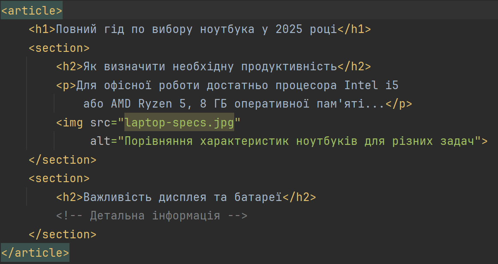
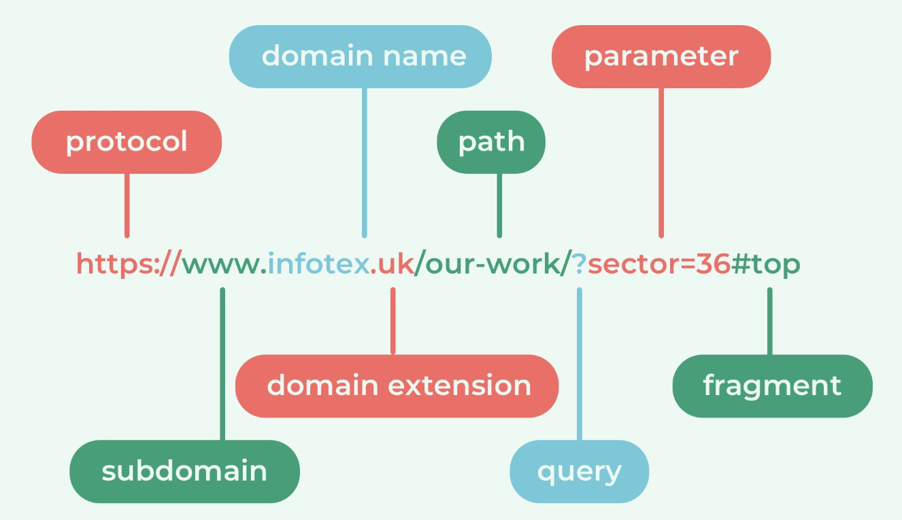
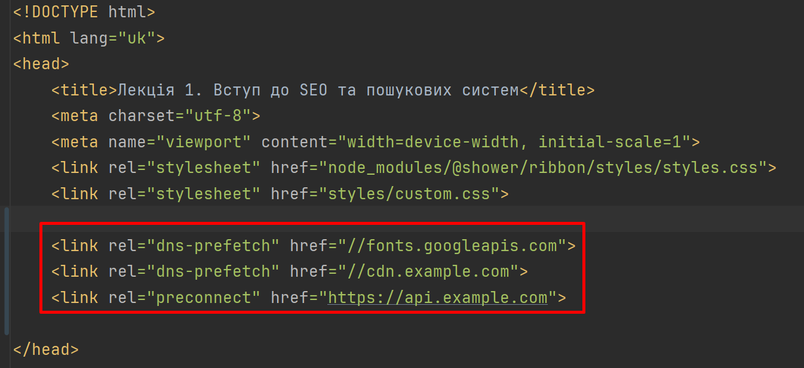

Лекція 1. Вступ до SEO та пошукових систем
План лекції:
- Поняття SEO та його роль у цифровому маркетингу.
- Як працюють пошукові системи: crawling, indexing, ranking.
- White/Grey/Black SEO.
- Домени, хостинг, DNS та їх вплив на SEO.
SEO як інженерна задача
Фактично, ми працюємо на стику:
- Web Engineering
- Information Retrieval
- Distributed Systems
- Performance Optimization
Як frontend або fullstack інженери ви напряму впливаєте на SEO через архітектуру, рендеринг і продуктивність.
Що таке SEO?
SEO (Search Engine Optimization) - оптимізація вебресурсу для підвищення його позицій у результатах
пошукових систем за релевантними запитами.
SEO (Search Engine Optimization) - це комплекс технічних, контентних та маркетингових дій, спрямованих на:
- Покращення позицій сайту в пошуковій видачі
- Збільшення органічного (безкоштовного) трафіку
- Підвищення якості цього трафіку
Ключове, про що треба пам'ятати - SEO ≠ реклама, SEO - це довгострокова інвестиція.
Що таке SEO?
Мета SEO:
- Збільшення органічного трафіку
- Покращення видимості бренду
- Залучення цільової аудиторії
- Підвищення конверсії
Що каже статистика:
- 93% онлайн-взаємодій починаються з пошукових систем
- 75% користувачів не переходять на другу сторінку результатів
- Органічний пошук генерує 53% всього трафіку сайту
Роль SEO у цифровому маркетингу
Переваги SEO:
- Довгостроковий ефект - результати зберігаються навіть після припинення активної оптимізації
- Висока довіра - користувачі більше довіряють органічним результатам, ніж рекламі
- Економічна ефективність - не потрібно платити за кожен клік
- Конкурентна перевага - топові позиції = більше клієнтів
SEO є частиною digital marketing ecosystem:
- SEO (органічний пошук)
- PPC (Pay-Per-Click - контекстна реклама)
- SMM (Social Media Marketing)
- Email-маркетинг
- Content marketing (статті, відео, соцмережі)
Роль SEO у цифровому маркетингу
| SEO |
← → |
Контент-маркетинг |
| ↓ |
|
↓ |
| SMM |
← → |
Email-маркетинг |
| ↓ |
|
↓ |
| PPC |
→ Analytics ← |
CRO |
60–70% кліків припадає на органічні результати, а не рекламу!
Роль SEO у цифровому маркетингу
SEO ← → Контент-маркетинг (Верхній рівень)
- SEO знаходить теми → Контент створює статті
- Контент залучає трафік → SEO ранжує в Google
- Приклад: SEO показує запит "як вибрати ноутбук" (10K/міс) → Контент пише гід → TOP-3 в Google
SEO → SMM (Ліва вертикаль)
- Статті стають постами в соцмережах
- Соціальні сигнали покращують SEO
- Приклад: стаття з блогу → Пост в Instagram → 3000 переходів назад на сайт
Роль SEO у цифровому маркетингу
Контент → Email (Права вертикаль)
- Lead-магніти (PDF-Guide) збирають emails
- Email розсилає корисний контент
- Приклад для онлайн-курсів програмування: "Roadmap Frontend-розробника: від нуля до junior за 6 місяців" →
5000 підписників → Email-серія →
15% купують
SMM ← → Email-маркетинг (Середній рівень)
- Конкурси в соцмережах → збір emails
- Email просить підписатись на Instagram
- Приклад: конкурс в Instagram → +5000 emails → Welcome letter → Cross-promotion
Роль SEO у цифровому маркетингу
SMM → PPC (Ліва вертикаль)
- Органічні пости тестують креативи
- Платна реклама масштабує успішний контент
- Приклад: пост має 8% engagement (залучення) → Бустимо за $100 → 50K переглядів
Email → Analytics (Права вертикаль)
- UTM (Urchin Tracking Module + Google Analytics)-параметри трекають ефективність
- Аналіз конверсій кожної розсилки
- Приклад: email-кампанія → Analytics: 25% open rate, 3.5% conversion, $12K revenue
Роль SEO у цифровому маркетингу
PPC ↔ Analytics ↔ CRO (Нижній рівень)
- PPC генерує дані → Analytics аналізує → CRO покращує → Конверсія росте → PPC ефективніше
- Приклад: analytics: bounce 65% → CRO: змінюємо кнопку → Bounce 45%, конверсія +18%
Головна ідея - всі канали працюють разом, а не окремо.
Analytics - це мозок системи, який координує всі дії!
Чому SEO важливе для бізнесу
- Довіра користувачів до Google > довіра до реклами
- Стабільний трафік 24/7
- Нижча вартість залучення користувача (CAC - Customer Acquisition Cost)
- SEO напряму впливає на UI/UX, швидкість, архітектуру сайту
SEO для frontend-інженера = якісний код + правильний рендеринг
Еволюція SEO
- 2000-2005: Keyword stuffing, масова закупка посилань
- 2005-2010: Google PageRank, якість контенту
- 2011-2015: Panda, Penguin оновлення - боротьба зі спамом
- 2015-2020: Мобільна оптимізація, RankBrain (AI)
- 2020-2025: Core Web Vitals, E-E-A-T, User Experience
Типи пошукових систем
- Google (≈ 90% ринку)
- Bing
- DuckDuckGo
- Baidu (Китай)
Пошукова система працює у 3 етапи:
- Crawling (Сканування) - виявлення сторінок
- Indexing (Індексація) - аналіз та збереження контенту
- Ranking (Ранжування) - визначення позицій у видачі
Crawling (Сканування)
Процес автоматичного виявлення та відвідування вебсторінок ботами (краулерами).
Основні краулери: Googlebot (Google), Bingbot (Bing).
Як це працює:
- Краулер починає з seed URLs
- Переходить по посиланнях на сторінці
- Завантажує HTML, CSS, JavaScript, images (обмежено)
- Додає нові URL до черги сканування
- Повторює процес
Crawl Budget - скільки сторінок Google готовий сканувати за одиницю часу.
Crawling (Сканування)
Як розробник, ви можете контролювати краулінг через файл robots.txt.
Файл robots.txt:
User-agent: *
Disallow: /admin/
Disallow: /private/
Allow: /public/
Sitemap: https://example.com/sitemap.xml
Ми кажемо ботам: "Не сканувати папку admin і private, але можна сканувати public".
Також вказуємо шлях до sitemap - це XML-файл зі списком всіх важливих сторінок сайту.
Crawling: обмежені ресурси
Пошукова система не має нескінченних ресурсів.
Google не буде сканувати ваш сайт повністю, якщо:
- сервер повільний
- багато 500-помилок
- багато дублюючих URL
Саме тому й існує поняття crawl budget - обмежений обсяг сторінок, які бот готовий просканувати за одиницю
часу.
Crawl budget
Crawl budget особливо критичний для великих систем - маркетплейсів, SaaS, каталогів.
Він залежить від:
- авторитету домену
- швидкості відповіді
- кількості помилок
Наприклад, якщо у вас: 1 мільйон URL,
є фільтри (за категорією, ціною, кольором, брендом, стилем тощо) генерують нескінченні варіації - ви створюєте
infinite URL space. Кількість можливих комбінацій фільтрів може зростати експоненціально. Це може призвести до
тисяч URL-адрес, кожна з яких знайде певну підмножину проданих товарів. Це може бути зручно для ваших
користувачів, але не дуже корисно для робота Googlebot, який хоче знайти все – один раз!
У результаті важливі сторінки можуть не індексуватися.
Інструменти для Server-Side Rendering (SSR)
JavaScript/TypeScript екосистема
- Next.js (React)
- Найпопулярніший SSR-фреймворк
- App Router, React Server Components
- Hybrid SSR/SSG/ISR
- Повноцінний full-stack
- Nuxt (Vue)
- Стандарт для Vue SSR
- SSR + SSG + SPA в одному
- Nitro server engine
- Хороша SEO підтримка
- SvelteKit
- Дуже швидкий
- SSR за замовчуванням
- Проста конфігурація
- Angular Universal
- SSR для Angular
- Використовується у великих enterprise-проєктах
- Nitro server engine
- Хороша SEO підтримка
- Remix
- Сервер-first підхід
- Хороша робота з формами і кешем
- Популярний серед професійних команд
Інструменти для Static Site Generation (SSG)
JavaScript/TypeScript екосистема
- Astro
- Islands architecture (Islands архітектура працює шляхом рендерингу більшої частини вашої
сторінки у швидкий статичний HTML з меншими «Islands» JavaScript, що додаються, коли
потрібна інтерактивність або персоналізація на сторінці)
- Мінімальний JavaScript
- Підтримка React/Vue/Svelte
- Next.js
- SSG + ISR (Incremental Static Regeneration)
- Гібридні сайти
- Nuxt
- Static mode (nuxt generate)
- Підходить для контент-сайтів
- Gatsby
- Сильна екосистема плагінів
- Частково витісняється Next/Astro
- Раніше дуже популярний
- Eleventy (11ty)
- Без прив’язки до SPA фреймворку
- Простий і легкий
Що обрати?
| Задача |
Інструмент |
| React-проєкт |
Next.js |
| Vue-проєкт |
Nuxt |
| Максимальна швидкість |
Astro |
| Мінімум JS |
Astro/Eleventy |
| Enterprise Angular |
Angular Universal |
| Сервер-first архітектура |
Remix |
| Svelte-проєкт |
SvelteKit |
Що маємо на практиці
Сучасні рішення часто поєднують:
- SSR+SSG+SPA
- Edge rendering (рендеринг сторінки відбувається не на центральному сервері, а на географічно близьких до
користувача edge-вузлах (CDN-сервери): Next.js (Edge Runtime), Cloudflare Workers)
- Streaming SSR (HTML сторінка відправляється браузеру частинами під час генерації, а не після повного
рендеру)
- Server Components
- Partial hydration/Islands architecture
Тобто фреймворки стали гібридними, а не строго SSR або SSG.
Indexing
Просканувати ≠ проіндексувати.
Після crawl Google:
- Аналіз контенту (текст, зображення, відео)
- Розпізнавання структури HTML (аналізує DOM)
- Виконання JavaScript (для SPA) за можливістю!
- Визначення ключових слів та семантики
- Визначає canonical URL
- Оцінює унікальність контенту
- Збереження в індексі
Якщо сторінка:
- дублює інші
- має мало контенту
- виглядає як thin content - вона може не потрапити в індекс.
Що індексується:
- Title, meta-description
- Заголовки (H1-H6)
- Текстовий контент
- Alt-атрибути зображень
- Structured Data (Schema.org)
Canonical та дублікати
Дублікати - одна з найчастіших проблем у великих системах.
Приклад (lля пошукової системи це різні URL):
- /product/1
- /product?id=1
- /product/1?utm=ads
<link rel="canonical" href="https://site.com/product/1"/>
Ranking
Ранжування - найскладніший етап.
- релевантність
- якість контенту
- поведінкові сигнали
- авторитет домену
- performance
Ranking
Ranking (Ранжування) - визначення порядку відображення сторінок у результатах пошуку.
- On-Page фактори:
- Релевантність контенту
- Якість та унікальність
- Ключові слова в title, H1, URL
- Внутрішня перелінковка
- Структура сторінки
- Off-Page фактори:
- Кількість та якість зворотних посилань
- Авторитетність доменів-донорів
- Соціальні сигнали
- Згадки бренду
- Технічні фактори:
- Швидкість завантаження
- Мобільна адаптивність
- HTTPS
- Core Web Vitals
White SEO
Легальні методи оптимізації, що відповідають рекомендаціям пошукових систем.
Практики:
- Створення якісного, унікального контенту
- Оптимізація технічних аспектів сайту
- Природна побудова посилань
- Покращення User Experience
- Використання семантичної розмітки
Приклад якісного контенту:

Використовуйте White Hat для довгострокового успіху.
Grey SEO
Методи на межі дозволеного, не прямо заборонені, але ризиковані.
Практики:
- Clickbait заголовки (але з якісним контентом)
- Купівля expired domains з історією
- Використання PBN (Private Blog Network) обережно
- Automation tools для масових дій
- Спіннінг контенту з високою унікальністю
Ризики:
- Можливі санкції при зміні алгоритмів
- Потреба постійного моніторингу
- Нестабільні результати
Black SEO
Методи, що порушують рекомендації пошукових систем для швидкого просування.
Практики (ЗАБОРОНЕНІ):
- Keyword stuffing - переспам ключових слів
- Cloaking - різний контент для ботів та користувачів
- Hidden text - прихований текст
- Link farms - масова закупка посилань
- Doorway pages - сторінки-пустушки
- Content scraping - копіювання чужого контенту
Ризики:
- Падіння позицій
- Вилучення з індексу
- Manual penalty від Google
Порівняння підходів SEO
| Критерій |
White SEO |
Grey SEO |
Black SEO |
| Легальність |
Повністю |
Межа |
Порушення |
| Швидкість |
Повільно (3-6 міс) |
Середньо (1-3 міс) |
Швидко (дні-тижні) |
| Стабільність |
Дуже висока |
Середня |
Низька |
| Ризик санкцій |
Мінімальний |
Помірний |
Високий |
| Довгостроковість |
Роки |
Місяці-роки |
Тижні-місяці |
Домени та їх вплив на SEO

Домени та їх вплив на SEO
Вибір домену:
-
Бренд vs Keyword
- comfy.ua (бренд)
- kuputy-noutbuk-kyiv.com (keyword)
-
TLD (Top-Level Domain)
- .com, .ua, .org - довіра
- .xyz, .info - менша довіра
-
Вік домену - старші домени мають перевагу
-
Історія домену - перевіряйте через Wayback Machine
WHOIS інформація - whois example.com
Історія сайту - https://web.archive.org/web/*/example.com
Структура URL та SEO
Правильна структура:
- https://example.com/laptops/gaming/asus-rog
- https://example.com/blog/seo-guide-2025
Не правильна структура:
- https://example.com/product?id=12345&cat=4
- https://example.com/страница/товар (кирилиця)
Рекомендації:
- Використовуйте дефіси, не підкреслення
- Уникайте спеціальних символів
- Коротші URL краще (до 60 символів) - Human-readable URLs (WTF?)
- Включайте ключові слова
- Використовуйте lowercase
Хостинг та продуктивність
Вплив хостингу на SEO:
- Uptime - доступність сайту (мінімум 99.9%)
- Швидкість відповіді сервера - TTFB < 200ms
- Географія серверів - CDN для глобальних проектів
- SSL/TLS сертифікати - HTTPS обов'язковий
Типи хостингу:
- Shared Hosting - дешево, але повільно
- VPS - баланс ціни та продуктивності
- Dedicated Server - максимальна продуктивність
- Cloud Hosting - масштабованість (AWS, Google Cloud)
- Static Hosting - для JAMstack (Vercel, Netlify)
Повільний сервер = менший crawl budget = гірші позиції.
DNS та швидкість резолвінгу
DNS (Domain Name System) - перетворює доменні імена на IP-адреси.
Процес DNS lookup:
- Браузер → Local cache
- Local cache → Recursive resolver (ISP)
- Recursive resolver → Root nameserver
- Root → TLD nameserver (.com, .
- TLD → Authoritative nameserver
- Повернення IP-адреси
DNS - перший крок у performance pipeline.
Оптимізація DNS:
- Використовуйте швидкі DNS-провайдери (Cloudflare, Google DNS)
- DNS Prefetching для сторонніх ресурсів
- Мінімізуйте кількість DNS lookups

HTTPS та безпека
Чому HTTPS важливий для SEO:
- Google використовує HTTPS як фактор ранжування (з 2014)
- Браузери позначають HTTP сайти як "небезпечні"
- Користувачі більше довіряють HTTPS
- Необхідний для HTTP/2 та сучасних Web APIs
Let's Encrypt — це безкоштовний центр сертифікації (CA), який видає
SSL/TLS-сертифікати для HTTPS.
- Безкоштовні сертифікати
- Автоматичне отримання та оновлення (через ACME-протокол, напр. Certbot)
- Підтримка більшості хостингів і серверів
Типові проблеми в реальних проєктах
- infinite URL space
- SPA без SSR
- відсутність canonical (/laptops?brand=asus та /laptops?brand=asus&sort=price - контент той самий.)
- динамічні фільтри без noindex (правильна стратегія фільтрів = Категорія - Індексувати, Комбіновані
фільтри = noindex)
- JS-навігація без гіперпосилань
Технічний чеклист для запуску
-
Домен:
- Короткий та зрозумілий
- Відповідає бренду
- Історія домену перевірена
- SSL сертифікат встановлений
-
Хостинг:
- Uptime > 99.9%
- TTFB < 200ms
- Підтримка HTTP/2
- Автоматичні бекапи
-
DNS:
- Швидкий DNS-провайдер
- CDN налаштовано (при потребі)
- DNS prefetch додано
-
Безпека:
- HTTPS працює
- Security headers встановлені
- Редіректи налаштовані
Інструменти для аналізу
Перевірка технічних аспектів:
- Google Search Console - офіційний інструмент Google
- Google PageSpeed Insights - швидкість та Core Web Vitals
- GTmetrix - детальний аналіз продуктивності
- WebPageTest - тестування з різних локацій
- SSL Labs - перевірка SSL конфігурації
- DNSPerf - швидкість DNS
Резюме
- SEO - це довгострокова інвестиція в органічний трафік
- Пошукові системи працюють у три етапи: Crawling - Indexing - Ranking
- White Hat SEO - єдиний сталий підхід
- Технічна інфраструктура критична для SEO:
- Швидкий хостинг
- Правильні DNS налаштування
- HTTPS обов'язковий
- Оптимізована структура URL
- Для frontend розробників важливо:
- SSR/SSG для SEO
- Оптимізація Core Web Vitals
- Semantic HTML
- Structured Data